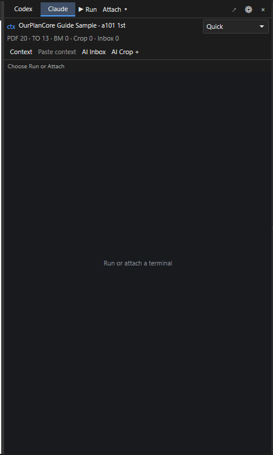
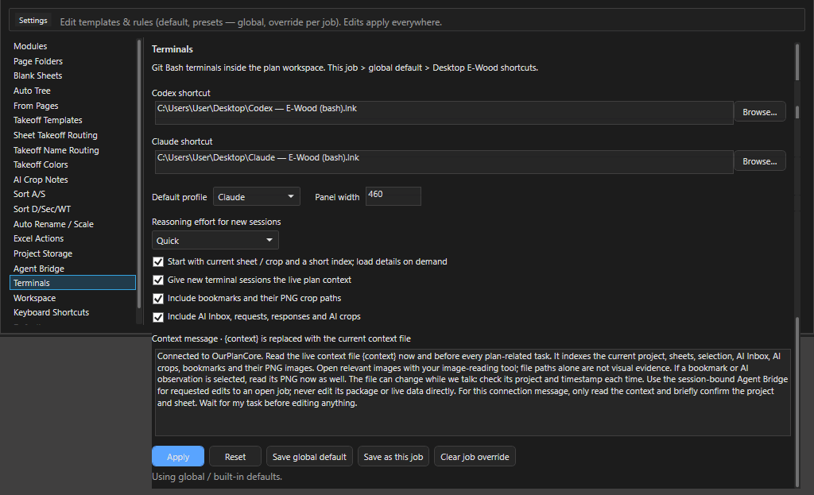

Консоль ИИ: терминалы Claude и Codex¶
Здесь: панель >_ с терминалами Claude и Codex внутри окна программы, что они знают о проекте (строка ctx, файл контекста), как отправить ассистенту кроп листа, как он правит открытый проект через Agent Bridge и как продолжить беседу на втором компьютере. Нужно, когда хочется спросить у ассистента про текущий лист, получить ноты из таблицы schedule или поручить ему рутину в дереве, не выходя из программы. Остальные места с ИИ (AI Crop Notes, AI Manager, чтение штампов, настройки Agent Bridge) - ИИ в программе.
>_ открывает консоль: выбор Codex или Claude, уровень Quick / Balanced / Deep, строка контекста с проектом и листом.
>_ справа от листа: переключатель Codex / Claude, Run и Attach, строка ctx со счётчиками, кнопки контекста и сам терминал Git Bash внутри окна.Что нужно один раз¶
- Git for Windows (Git Bash,
mintty.exe): терминал живёт в нём. - CLI ассистента (
claudeилиcodex) установлен и вход выполнен один раз на этом компьютере. - Без Workspace: ярлыки запуска в
Settings > Terminals(по умолчаниюCodex - E-Wood (bash).lnkиClaude - E-Wood (bash).lnkна рабочем столе; годится ярлык mintty или E-Wood bash-лончер с одной строкойstart mintty). С включённым Workspace ярлык не нужен: программа сама запускает mintty из управляемой папки (Workspace). - Для правок в проекте:
Settings > Agent Bridge > Enable local assistant access(Agent Bridge). Для кропов в консоль: модуль AI.
Как запустить ассистента в окне¶
Зачем: Claude или Codex рядом с чертежом, с живым контекстом проекта. Нужно: Git Bash и CLI ассистента установлены (выше).
- Нажмите
>_на правой командной полосе (Show / hide Codex and Claude terminals, команда палитрыCodex / Claude Terminal): панель открылась справа от листа. - Выберите профиль Claude или Codex.
- Выберите усилие в списке: Quick для вопросов по листу, Deep для разбора.
- Нажмите Run и дождитесь статуса
Connected - context sent at startup; ассистент коротко подтверждает проект и лист. - Напишите задачу в терминале.
Результат: беседа идёт в панели, строка ctx показывает проект и лист; крестик скрывает панель, беседа продолжается.
Панель: кнопки¶
Ширина панели 340-900 px: тянуть за левый край или задать в Settings > Terminals > Panel width (по умолчанию 460); на узком окне панель уступает место чертежу.
| Элемент | Что делает |
|---|---|
Codex / Claude |
профиль: у каждого свой терминал, оба живут одновременно, переключение не рвёт сессии |
Run |
запустить или продолжить ассистента (Run / resume using the selected E-Wood shortcut); при Workspace стартует claude --continue или codex resume --last, то есть продолжает последнюю сессию, иначе новую |
Attach |
подхватить уже открытое окно Git Bash или mintty: меню со списком окон и Refresh; после подключения нажать Paste context |
Quick / Balanced / Deep / Provider default |
список Reasoning effort for the next launch: усилие рассуждения для следующего запуска, low, medium, high или как у провайдера; у подключённой сессии список неактивен, она живёт своими настройками |
ctx <проект> <лист> |
что сейчас в контексте (ниже) |
Context |
открыть живой файл контекста в редакторе по умолчанию |
Paste context |
вставить сообщение подключения в терминал без Enter: прочитать и отправить самому, когда ассистент свободен |
AI Inbox |
развернуть AI Inbox внизу Main View |
AI Crop + |
нарисовать кроп на листе и отдать его PNG в контекст (ниже) |
стрелка Detach (Detach terminal to its own window) |
открепить терминал в отдельное окно; беседа продолжается (Detached - conversation continues in its own window); активна только при подключённой сессии |
| шестерёнка | Settings > Terminals |
три точки (Terminal actions) |
только на узкой панели (уже 390 px): вместо стрелки и шестерёнки меню Detach to window и Settings > Terminals; подписи кнопок укорачиваются (Inbox, Crop +), строка счётчиков прячется |
крестик (Hide panel) |
скрыть панель; обе беседы продолжают работать |
Строка статуса под кнопками ведёт по шагам: Choose Run or Attach, Starting Claude..., Connected - context sent at startup, Connected - startup context disabled, Context pasted - submit it in your assistant when ready, AI crop saved - available in context and AI Inbox. Ошибка пишется туда же и в строку статуса окна с префиксом Terminal:.
Что ассистент знает о проекте¶
Пока панель открыта, программа раз в две секунды проверяет, не изменилось ли что-то (лист, выделение, закладка, запись в AI Inbox, файлы проекта), и переписывает два файла в профиле программы (%LOCALAPPDATA%\OurPlanCore\terminals\<номер процесса>\), не в проекте:
| Файл | Что внутри |
|---|---|
context-summary.json |
короткая сводка: проект, текущий лист (имя, PDF, масштаб), выбранная закладка или кроп с путём к PNG, выбранный запрос Inbox, счётчики, дескриптор Agent Bridge, ссылка на полный файл |
context.json |
полный индекс: все листы (pages), все позиции (takeoffs), закладки с PNG (bookmarks), кропы (ai_crop_bookmarks), запросы и ответы Inbox (ai_requests), выделенные замеры, разметка текущего листа, read-only, путь пакета, блок bridge с сессией и инструкцией |
Строка ctx показывает то же коротко: <проект> <лист> и счётчики PDF (листов), TO (позиций), BM (закладок), Crop (кропов ИИ), Inbox (запросов); при выбранной закладке добавляется BM: <имя>. No project open значит, что проекта нет и контекст пустой.
Галки в Settings > Terminals решают, что попадает в файл: Include bookmarks and their PNG crop paths, Include AI Inbox, requests, responses and AI crops. Галка Start with current sheet / crop and a short index; load details on demand (включена) отправляет ассистенту сводку, а не полный файл: он читает детали по мере задачи и отвечает быстрее. Когда программа закрывается, в файле остаётся state: app_closed, и ассистент знает, что мост недействителен до нового открытия.
Сообщение подключения¶
При Run с галкой Give new terminal sessions the live plan context ассистент получает первым сообщением текст из Settings > Terminals > Context message; {context} в нём заменяется путём к файлу контекста. Встроенный текст просит: прочитать файл сейчас и перед каждой задачей по плану, открывать PNG закладок и кропов инструментом чтения картинок (путь сам по себе не доказательство), проверять проект и время в файле, правки делать только через Agent Bridge, а на само подключение ответить коротким подтверждением проекта и листа и ждать задачу. С Workspace добавляется путь общей папки, индекс памяти _agent-memory/MEMORY.md и правила _rules/global.md без загрузки всей базы знаний.
Текст правится в настройках (до 12000 знаков, {context} обязателен); Reset возвращает встроенный. Paste context вставляет то же сообщение в уже идущую сессию без отправки.
Как отправить кроп листа в консоль: AI Crop +¶
AI Crop + и рамка по части плана: кроп попадает в контекст консоли и в AI Inbox.Зачем: ассистент видит таблицу или узел картинкой, а не догадывается по тексту. Нужно: модуль AI включён, проект не read-only, терминал подключён.
- Открыть лист, нажать
AI Crop +(нужен модуль AI и проект не read-only). Статус:Drag a crop on the sheet - Esc cancels. - Растянуть рамку по таблице schedule, узлу или штампу.
- Программа сохраняет PNG кропа в проект, создаёт наблюдение
terminal_cropи запрос в AI Inbox с текстом "прочитай кроп в контексте плана и жди задачу". Запись сразу выбрана в Inbox и попадает в контекст как выбранный кроп. - Написать ассистенту в терминале, что с кропом делать: "выпиши ноты из этой таблицы", "какая марка header над проёмом 3". Он открывает PNG по пути из контекста.
Результат: статус AI crop saved - available in context and AI Inbox, запись выбрана в Inbox, строка ctx показывает Crop на единицу больше.
Так же в контекст попадает выбранная закладка (B, K, вкладка Bookmarks) и выбранная запись AI Inbox: достаточно выделить её перед вопросом. Пункт Use in Codex / Claude terminal в меню записи AI Inbox делает это одним щелчком: открывает панель >_ и сразу обновляет контекст с этой записью. В уже идущую беседу её нужно передать кнопкой Paste context, новая сессия получит её при Run.
Правки проекта через Agent Bridge¶
Ассистент не трогает файлы проекта. В блоке bridge контекста лежит сессия открытого проекта и путь к клиенту agent_bridge.py (папка Tools\AgentBridge рядом с EXE). Порядок на его стороне: inspect (снимок дерева и ревизия), apply с этой ревизией (создать, переименовать, перенести, скопировать, удалить папки и позиции, добавить замеры), save, при ошибке undo. Изменения появляются в дереве и на листе сразу, удалённое уходит в AI_Context/agent-trash.
Что проверить эстиматору после работы ассистента: дерево (имена по канону, папка, тип замера), Total у новых позиций, Ctrl+S. Мост выключен или проект read-only - ассистент ответит, что правок сделать не может; включить Settings > Agent Bridge. Ограничения моста (масштаб страницы не ставит, команды палитры только запускает, один агент на сессию): Agent Bridge.
Беседы и второй компьютер¶
При включённом Workspace сессии, начатые из панели, архивируются сами. Settings > Workspace > Conversations: Continue selected открывает отдельную ветку сохранённой беседы (Claude продолжает расшифровку с --resume --fork-session, Codex импортирует копию истории и продолжает её), Setup on this computer ставит ярлыки и проверяет CLI, Import a Claude / Codex conversation подхватывает беседу, начатую вне программы. Перед открытием другой беседы текущий терминал нужно открепить: Detach the current terminal before opening another conversation; it will keep running. Беседа больше 256 MB пропускается с предупреждением. Адрес сервера и вход в ассистентов живут на каждом компьютере отдельно.
Settings > Terminals¶

| Поле | Что задаёт |
|---|---|
Codex shortcut, Claude shortcut |
ярлык или лончер (.lnk, .cmd, .bat, .exe), Browse...; порядок: этот проект, глобально, ярлыки E-Wood на рабочем столе |
Default profile |
какой терминал выбран при открытии панели |
Panel width |
340-900 |
Reasoning effort for new sessions |
Quick, Balanced, Deep, Provider default |
Start with current sheet / crop and a short index; load details on demand |
сводка вместо полного файла |
Give new terminal sessions the live plan context |
отправлять сообщение подключения при Run |
Include bookmarks and their PNG crop paths, Include AI Inbox, requests, responses and AI crops |
состав контекста |
Context message |
шаблон с {context} |
Кнопки Apply (до перезапуска), Reset, Save global default, Save as this job, Clear job override; строка под ними говорит, что действует: Using global / built-in defaults, Using this job's override, Applied for this session.
Сценарии¶
Спросить про текущий лист
- Открыть
s201 2nd, выделить спорный узел инструментом Select (выделение тоже в контексте). >_,Claude,Quick,Run; дождаться короткого подтверждения проекта и листа.- Написать: "что за деталь под выделенным замером и к какому этажу она относится".
- Ответ сверить с листом; при сомнении
Deepдля следующей сессии.
Отправить кроп schedule и получить ноты
- Открыть лист спецификации
a901 win sch,AI Crop +, растянуть рамку по таблице. - В терминале: "выпиши из этого кропа строки Tag - Size для нот проёмов".
- Полученные строки проверить по таблице и вставить в Notes позиций или в DFL. Формат компактных строк из
AI crop here -> noteзадаётSettings > AI Crop Notes(ИИ в программе).
Попросить создать позиции через bridge и проверить
Settings > Agent Bridge, включить доступ; открыть нужный лист, поставить зелёную точку на корпус.- В терминале: "создай в
framing/2nd floor framing/postsпозиции по постам со schedule S2.1, имена по канону, тип Count". - Ассистент делает
inspect,apply,save; позиции появляются в дереве. - Проверить папку, имена,
Total, лишнее убрать,Ctrl+S. Не так - попроситьundoилиCtrl+Zв дереве.
Продолжить беседу на втором компьютере
- На первом:
Ctrl+S,Settings > Workspace > Sync now, дождаться Synced. - На втором: открыть проект через
Projects > Open selected,Settings > Workspace > Conversations, выбрать беседу,Continue selected. - Панель
>_открывается с веткой этой беседы; контекст уже местный, с открытого листа.
Если терминал не стартует¶
| Сообщение | Что сделать |
|---|---|
Terminal shortcut was not found. Choose it in Settings > Terminals. |
указать ярлык Browse... или включить Workspace |
Install Git for Windows (Git Bash), then try Run again. |
поставить Git for Windows; Settings > Workspace держит инструкцию |
Choose a Git Bash / mintty shortcut, or the E-Wood Bash launcher., This launcher has additional batch commands... |
ярлык ведёт не на mintty или лончер сложнее одной строки start mintty; выбрать прямой ярлык mintty |
Assistant CLI not installed. Open Settings > Workspace > Setup on this computer. |
в терминале нет claude или codex: установить CLI и войти |
The terminal did not expose its window. Use Attach if it opens later. |
окно открылось отдельно: Attach, выбрать его в списке |
This terminal is already connected. |
сессия уже идёт; писать в неё или Detach и Run заново |
Context update failed: ..., в файле context_unavailable |
контекст не собрался; переключить лист и снова Context; на листах с кропами исправлено в 2.2.36 |
Остальное: Решение проблем, терминал и Agent Bridge.
См. также¶
- ИИ в программе: AI Crop Notes, чтение штампов, Agent Bridge
- Менеджеры: AI Inbox и AI Manager
- Workspace и второй компьютер
- Settings и модули